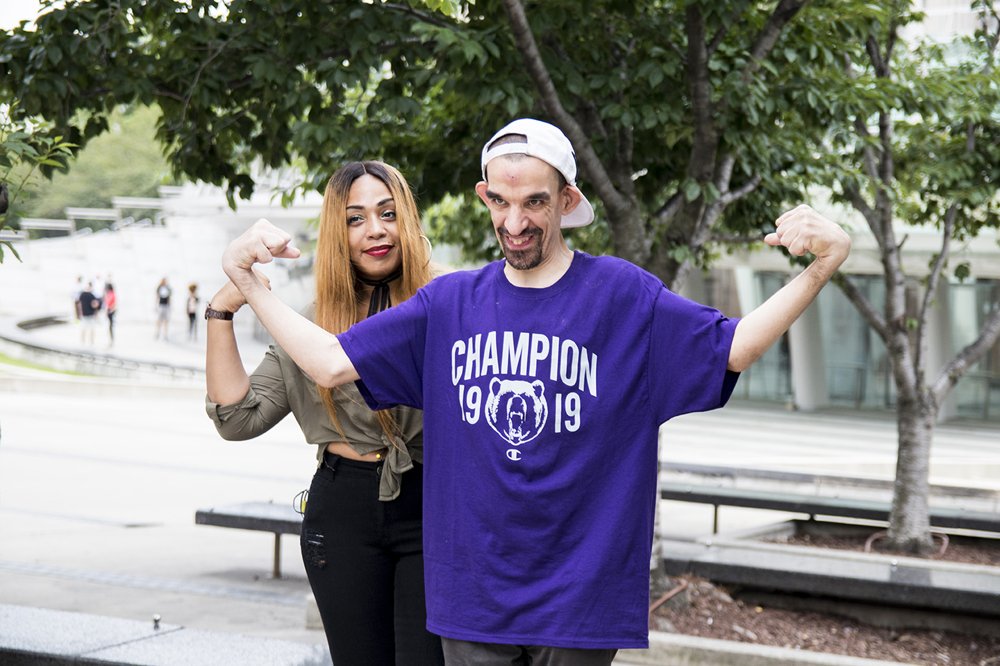
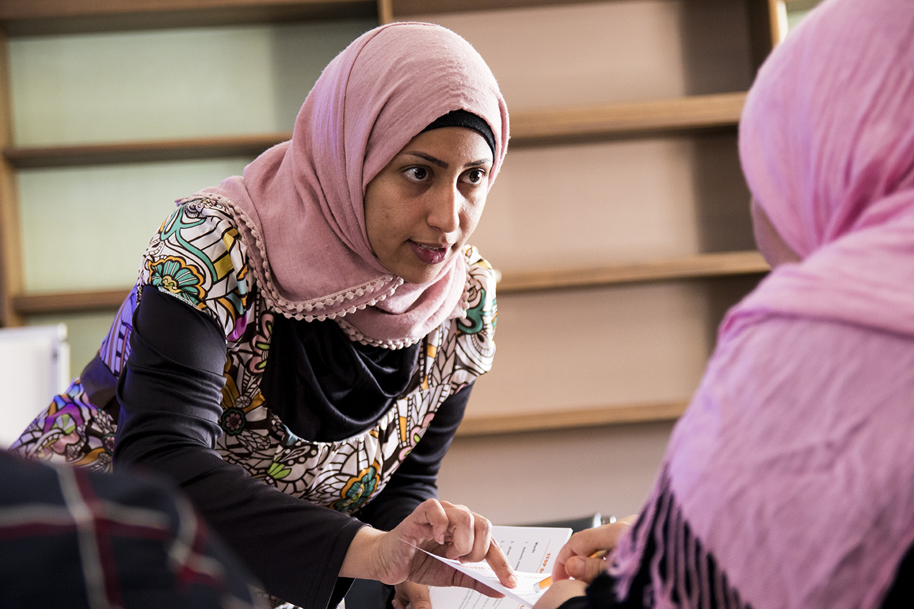
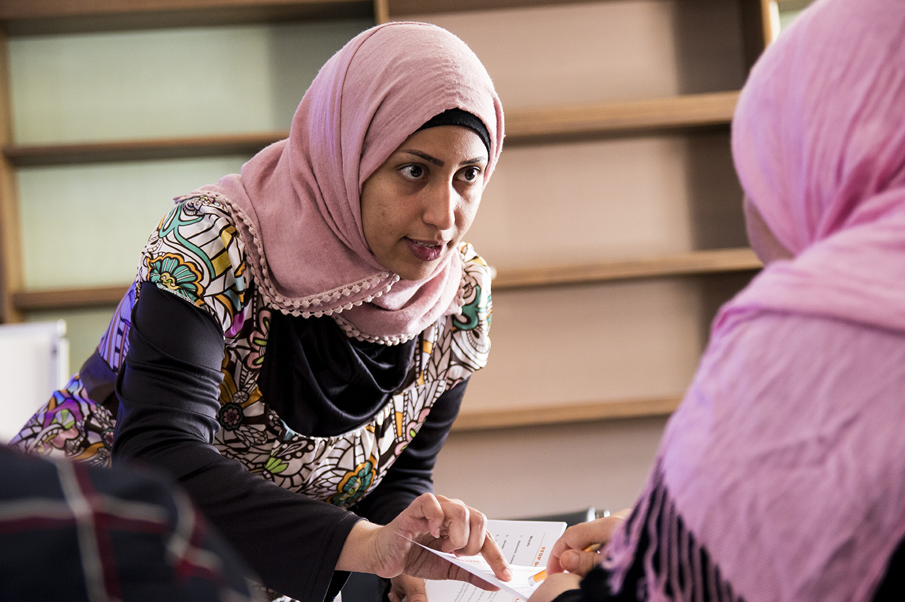
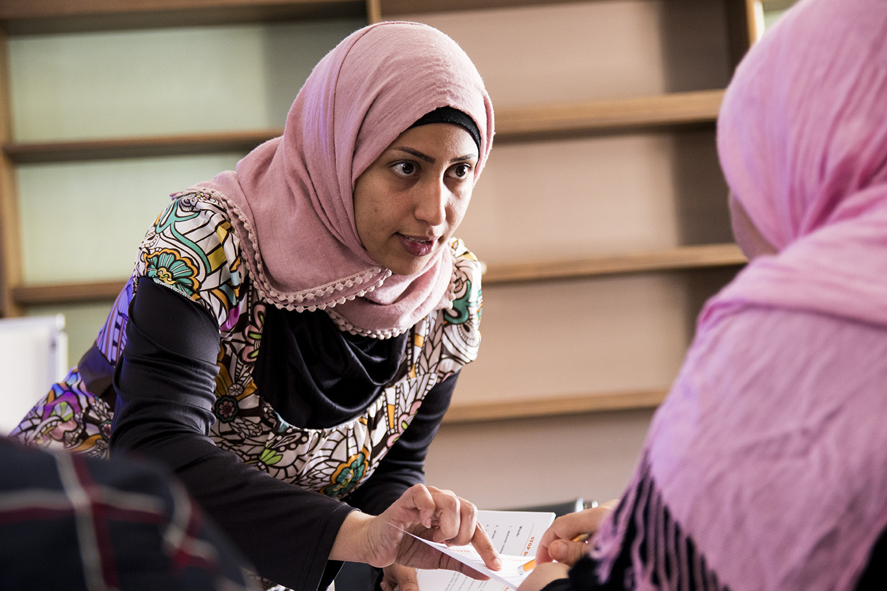

Heartshare Photography
One of my main responsibilities at Heartshare is traveling to all corners of New York City and photographing the people our services reach. These often end up in our literature, social media, and internal documentation.



 



